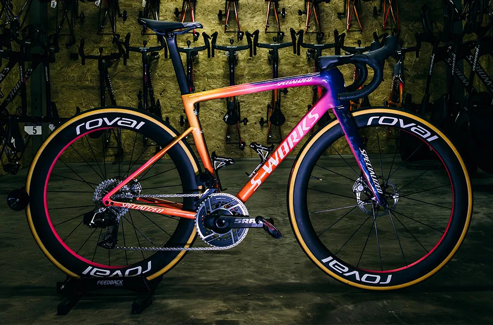

Le bici da corsa più costose al mondo
Il mondo delle bici da corsa è fatto di tecnologia, design e performance. Ma in alcuni casi, il valore di una bici va ben oltre la funzionalità, trasformandosi in lusso, esclusività e artigianato estremo.
1. Trek Butterfly Madone – oltre 500.000€
Questa bici, creata da Damien Hirst e usata da Lance Armstrong, è considerata un’opera d’arte. Il telaio decorato con vere ali di farfalla ha sollevato anche dibattiti etici, ma rimane uno dei pezzi più iconici mai venduti.
2. Aurumania Gold Bike Crystal Edition – 400.000€
Un telaio placcato in oro 24 carati, con oltre 600 cristalli Swarovski incastonati a mano. Non è certo una bici per gareggiare, ma un simbolo di lusso estremo e artigianato europeo.
3. Cervélo R5ca Limited Edition – 12.000€
Un vero gioiello di ingegneria canadese. Telaio in carbonio ultraleggero, peso complessivo sotto i 6 kg e geometria da corsa pura. Ogni esemplare è numerato e costruito a mano.
4. Colnago C68 – la tradizione italiana
Prodotta interamente in Italia, la C68 rappresenta la fusione tra artigianato e tecnologia. Con allestimenti top di gamma, può superare facilmente i 15.000€. È la bici dei sogni per chi ama la classe italiana su due ruote.
Oro, carbonio e passione
Dietro a questi prezzi da capogiro non c’è solo marketing, ma anche ricerca e passione. Materiali come il grafene, il titanio e le fibre ad alta resistenza vengono sviluppati per un solo obiettivo: creare la bici perfetta.
In fondo, il valore di una bici non si misura solo in euro, ma nel piacere che regala a chi pedala.